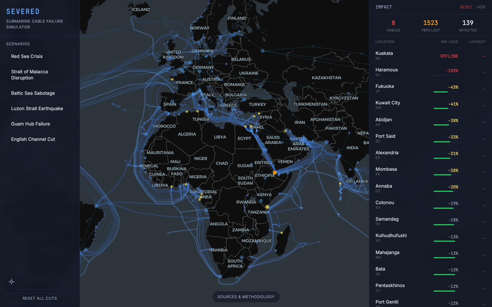

About 95% of intercontinental data travels through submarine cables. Not satellites, not microwave relays. Physical cables on the ocean floor, some of them thinner than a garden hose. When one gets cut by a ship anchor, an earthquake, or military action, the rerouting happens so fast that most people never notice. But when several cables fail at once in the same chokepoint, entire countries can lose connectivity. I wanted to build something that made this infrastructure visible and let you break it yourself.

{kind=link}
Severed is a client-side simulator built on real data. You click a cable on a dark-themed globe and cut it. Or you select a chokepoint scenario and watch what happens when an entire region goes dark. The app computes which of the 930 metro areas in the graph lose bandwidth, by how much, through which cables traffic reroutes, and whether any cities end up completely isolated. Everything runs in the browser. There is no backend.
The graph model
The network is modeled as a weighted graph where nodes are metro areas (not countries, because a country like the United States has dozens of independent landing points) and edges are either submarine cable segments or terrestrial backbone links. Cable data comes from TeleGeography's Submarine Cable Map, which tracks 594 operational cables with their GeoJSON routes and landing stations. Each cable is split into segments connecting pairs of metros, and each segment carries a capacity estimate in terabits per second.
The capacity numbers are the trickiest part of the dataset. Some cables have publicly reported design capacity from FCC filings or press releases. Most don't. For those, the simulator uses an estimation heuristic based on the cable's ready-for-service year and fiber pair count: newer cables carry more data per pair because cables from the 2020s carry far more per pair than cables from the early 2000s. Every capacity figure has a confidence tag (verified, estimated, or approximated) so you can see which numbers are solid and which are educated guesses.
Submarine cables alone don't tell the full story. Traffic between, say, Frankfurt and Paris doesn't go through a submarine cable. It goes overland. So the graph also includes 151 hand-researched terrestrial backbone edges connecting major metros across the same landmass. These are the hardest data to source because terrestrial capacity is rarely published, so each edge cites the operator press releases and industry reports it was derived from.
How the simulation works
The engine runs Dijkstra's algorithm from each of 92 global hub metros (New York, London, Singapore, Tokyo, and so on) to compute a baseline. For every metro in the graph, it calculates the bottleneck bandwidth along the shortest path to each hub, then sums them. This isn't a full max-flow computation, which would be prohibitively expensive at this scale. It's a deliberate approximation that captures "how much bandwidth can this city realistically reach on the global internet" without solving an all-pairs max-flow problem.
When you cut a cable, the engine resolves which graph edges are affected. For a chokepoint cut, it checks which cable segments have endpoints or midpoints inside a predefined polygon (the Red Sea polygon, for instance, covers the strait between Yemen and Djibouti). For a point cut, it finds all segments within a configurable radius. The affected edges are removed from the graph, Dijkstra runs again from every hub, and the engine diffs the results against the baseline. Per-metro output includes bandwidth loss percentage, latency change, path diversity, and the top five cables or terrestrial links that now carry rerouted traffic.
The whole simulation completes in under 200 milliseconds. It runs in a Web Worker so the globe stays interactive while the graph engine churns.
Validation against real events
A simulation is only useful if it matches reality. All six built-in scenarios are reconstructions of actual cable failures. The 2024 Red Sea Houthi attacks damaged multiple cables serving the Middle East and East Africa. The simulator correctly shows major bandwidth loss in the WANA region while East Africa remains resilient due to diverse routing around the Cape of Good Hope. The 2024 Baltic Sea sabotage cut two cables, but the region has so much redundancy that the simulated impact is near zero, which matches the real outcome. The 2006 Taiwan earthquake knocked out cables in the Luzon Strait, a known chokepoint where most East Asian traffic concentrates.
The most informative test case is the 2008 Mediterranean cable cuts, where multiple failures near Alexandria caused Egypt to lose about 70% of its bandwidth and India about 60%. The simulator's numbers land in the right ballpark. Not exact, because real-world rerouting depends on peering agreements and traffic engineering that the model doesn't capture, but close enough to be directionally useful.
What you find when you start cutting
The interesting part isn't any individual scenario. It's the patterns that emerge when you spend time clicking around the map. Some findings that surprised me: the Luzon Strait between Taiwan and the Philippines is far more consequential than most people realize. A handful of cables through that corridor carry the majority of traffic between East Asia and the rest of the world. Cut them and Japan, South Korea, and Taiwan all take significant hits. Meanwhile, Western Europe is almost impossible to isolate. The number of cables landing in the UK, France, Spain, and Portugal from different directions creates enough redundancy that you have to cut dozens of cables simultaneously to meaningfully degrade service.
Small island nations are fragile in ways that are obvious in retrospect but easy to overlook. Tonga, Tuvalu, and several Pacific islands depend on a single cable. One anchor drag and they go dark. West Africa is somewhere in between: there's growing cable diversity, but a cluster of failures at the right chokepoint can cascade because the terrestrial alternatives are limited.

{kind=link}
Rendering the globe
The visualization uses Deck.gl on top of MapLibre GL with a CARTO Dark Matter basemap, which is free and requires no API key. Cables render as arcs with width scaled by capacity, colored on a blue gradient by tier. Cut cables turn red. Metro nodes change color based on impact: green for unaffected, yellow for degraded, orange for heavy loss, red for isolated. The impact panel on the right ranks affected metros in a scrollable list with per-metro bandwidth bars and latency deltas.
State management is Zustand, the UI is React 19 with Tailwind CSS 4, and the build is Vite. The whole thing deploys as static files to GitHub Pages. No accounts, no backend, no API keys.